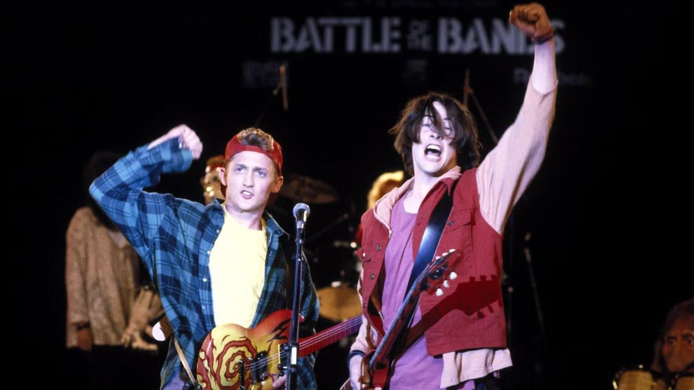

© Orion Pictures
Rock across time · Bill & Ted
Wyld Stallyns
Bill S. Preston and Ted Theodore Logan are two friends from San Dimas with big guitars and an unusually complicated rehearsal schedule. Wyld Stallyns bring people together with a song that reaches across time.
Bill and Ted close the festival. Big guitars, a generous finale, and an audience that has come a little further than usual.